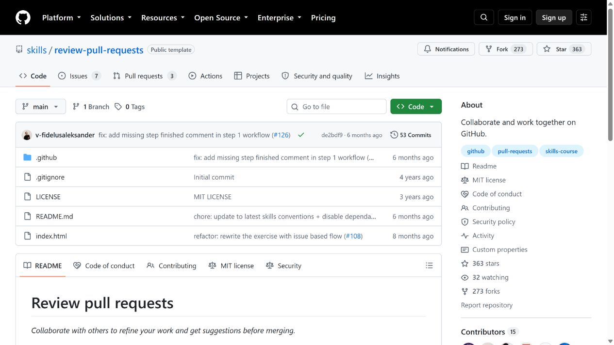
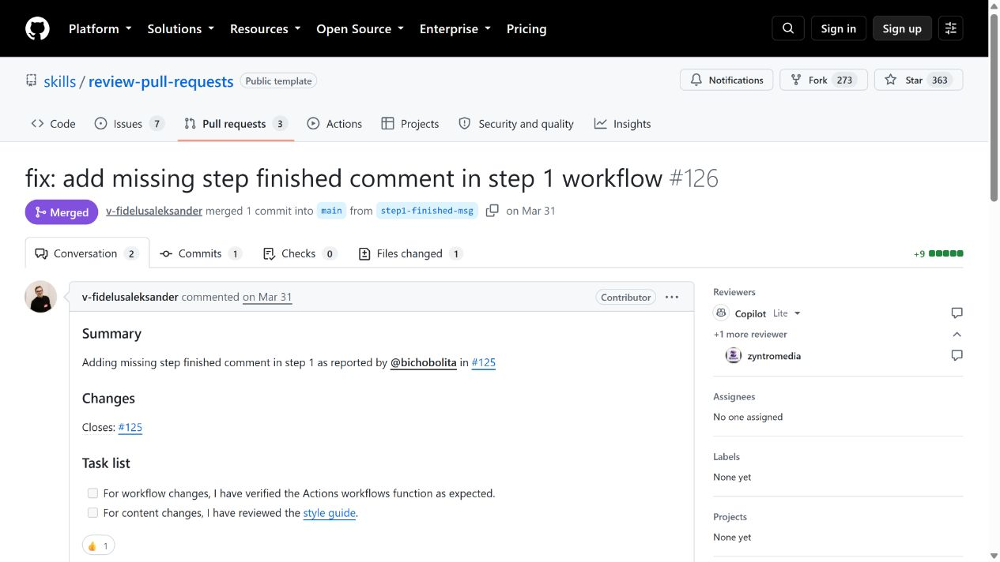
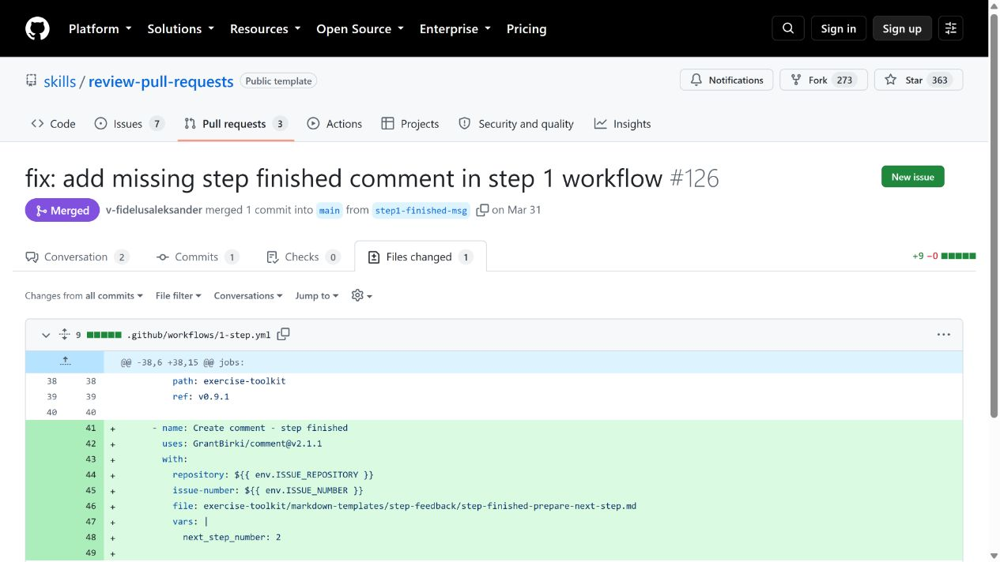
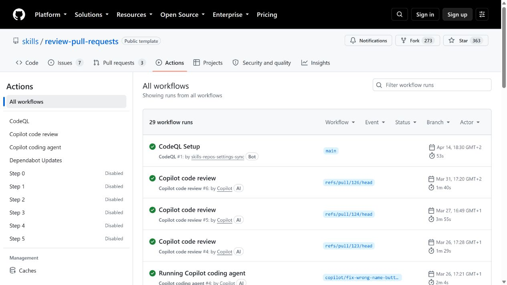

Comprendre pour agir
Ouvrez une ressource pour répondre à une question précise, puis testez votre compréhension dans le TP. Les consignes et horaires de référence sont ceux du parcours des huit TP.
Ce que vous savez déjà
1. Git et GitHub désignent-ils la même chose ?
Non. Git gère les versions, y compris sans réseau. GitHub héberge des dépôts Git et ajoute des outils de collaboration : issues, PR, revues et automatisations.
2. Après un commit, mes collègues voient-ils mon changement ?
Pas nécessairement. Le commit existe localement. Un push publie les commits sur le dépôt distant, si vous y avez accès.
3. Une branche est-elle une copie complète du projet ?
C’est une référence mobile vers un commit, qui permet de faire évoluer une ligne de travail. Les fichiers affichés changent quand on change de branche.
4. Quelle est la différence entre issue et pull request ?
L’issue formule le besoin et ses critères. La PR propose des changements précis et permet leur revue avant intégration.
5. Tous les tests passent : peut-on fusionner ?
Il faut encore vérifier le besoin, la pertinence des tests, la documentation et la revue. Un test réussi ne couvre que les scénarios qu’il exécute.
De votre fichier au dépôt partagé
Votre poste
Fichiers de travail : ce que vous modifiez.
Index : ce que vous sélectionnez avec git add.
Historique local : ce que vous enregistrez avec git commit.
Le dépôt distant
git push y publie vos commits.
git fetch récupère les informations distantes sans intégrer automatiquement les changements dans votre branche.
git pull --ff-only récupère et avance la branche seulement si cela ne nécessite pas de fusion.
git status indique l'état de votre travail. git diff montre les changements non indexés. git diff --staged montre ce qui sera enregistré dans le prochain commit.
git status
git diff
git add campus.py tests/test_inscription.py
git diff --staged
git commit -m "Refuser une inscription à capacité atteinte"
git pushVoir le travail avancer
Trois animations pédagogiques, indépendantes de GitHub. Avancez pas à pas et annoncez ce qui doit se passer avant de révéler l'étape suivante.
Schémas simplifiés : les transitions représentent les actions de l'équipe, pas une mesure du temps. Le conflit exige une décision humaine ; la génération exige des sources relues.
Lire la page d’un dépôt

main au-dessus des fichiers ; Code pour les sources et le README ; Issues pour les besoins ; Pull requests pour les propositions ; Actions pour les exécutions automatisées.Les captures montrent un dépôt public de GitHub Skills en lecture seule. Il sert à repérer l’interface. Les exercices et preuves de votre cours sont réalisés dans Campus Events.
Comprendre ce que la PR compare

main et la branche source ; Conversation pour le contexte ; Commits pour l’historique ; Checks pour les contrôles associés ; Files changed pour le diff.Cette capture représente une PR déjà fusionnée. Elle sert à lire les repères, pas à montrer une validation en attente. Pour l’exercice, ouvrez votre propre PR encore ouverte.
Le titre décrit l’effet attendu. La description donne le besoin, les choix et la vérification. Le relecteur ne devrait pas avoir à deviner le scénario de test.
Lire un diff avant de donner son avis

Dans votre PR ouverte, survolez une ligne pour ajouter un commentaire. Rassemblez vos remarques avec Start a review, puis publiez une décision avec Submit review. Selon la version de l’interface, certains intitulés peuvent être légèrement différents.
Commencez par le contrat et les tests, puis examinez la logique et la lisibilité. Un renommage cosmétique n’est pas équivalent à une erreur de résultat.
Une revue utile fait avancer le travail
Constat → impact → proposition → preuve
« Bloquant : avec 4 inscrits pour 4 places, la comparaison autorise une nouvelle inscription. Nous dépassons la capacité. Peux-tu utiliser une comparaison stricte et ajouter le test (4, 4) → False ? »
| Décision | Quand la choisir |
|---|---|
| Comment | Question, clarification ou remarque qui n’exprime pas une approbation. |
| Request changes | Problème qui doit être corrigé avant la fusion. |
| Approve | Critères vérifiés et changement acceptable dans le périmètre de la revue. |
L’auteur répond puis pousse ses corrections sur la même branche. La PR se met à jour. Le relecteur regarde le nouveau diff. Selon les protections configurées, une approbation peut devenir caduque après un nouveau commit.
Résoudre les intentions, pas seulement les marqueurs
Deux branches peuvent être fusionnées sans conflit si leurs changements sont compatibles. Un conflit apparaît lorsque Git ne peut pas choisir automatiquement comment les combiner, par exemple après deux modifications de la même ligne.
<<<<<<< HEAD
Revue requise : 1 personne différente de l'auteur.
=======
Revue requise : 2 personnes.
>>>>>>> origin/mainDans ce scénario, HEAD est votre branche de travail. origin/main est la version récupérée du distant. Lisez les deux intentions : nombre de relecteurs et indépendance vis-à-vis de l’auteur.
git fetch origin
git merge origin/main
# Modifier docs/regles.md et retirer les marqueurs
git add docs/regles.md
git commit -m "Réconcilier les règles de revue"
python -m unittest discover -s tests -v
git pushCette modification du texte ne change pas les réglages de protection GitHub. Si vous adoptez réellement deux approbations, configurez la règle avec le formateur. En atelier, une approbation reste le minimum prévu.
Quatre documents, quatre questions
Architecture · A
Quels composants ? Quelles responsabilités ? Quels flux et quelles limites ?
docs/architecture.md
Guide technique · B
Comment préparer, tester, générer et diagnostiquer depuis un clone propre ?
docs/guide-technique.md
Décision d’architecture · C
Pourquoi retourner 0.0 pour (0,0) ? Quelles options ont été écartées et quelles conséquences ?
docs/adr-001.md
Changelog · D
Quels comportements changent dans v1.0.0 ? Quelles PR le prouvent ? Quelles limites restent ?
docs/changelog.md
Le README sert de porte d’entrée. Les docstrings décrivent l’API : entrées, sortie, erreurs et cas limites. Une documentation est relue dans une PR comme le code.
Générer une preuve, pas seulement un beau fichier
Le générateur fourni utilise uniquement Python standard. Il lit les documents, analyse le code avec ast et lance réellement les tests. Il produit un HTML autonome.
python tools/build_docs.py
# Ouvrir ensuite build/documentation.html| Source | Contenu produit | Responsabilité humaine |
|---|---|---|
| docs/*.md | Chapitres techniques | Écrire les intentions, vérifier les explications |
| campus.py | Signatures et docstrings | Décrire exactement le contrat |
| tests/ | Résultats réels d’exécution | Choisir des scénarios pertinents |
| Git ou GITHUB_SHA | Révision des sources | Retrouver le commit et le run correspondants |
Modifiez une docstring, régénérez et observez le changement. Si les tests échouent, la génération s’arrête et l’ancien rapport local est retiré pour éviter une livraison périmée. Le dossier build/ est ignoré par Git.
Le rendu Markdown du générateur est volontairement limité : titres, paragraphes et blocs de code. Il ne remplace pas un outil complet comme un générateur de site documentaire. L’objectif est de comprendre et maîtriser toute la chaîne.
Retrouver le résultat dans GitHub Actions

La capture illustre la navigation d’un dépôt tiers. Dans Campus Events, ouvrez Actions → Qualite → un run → verification pour lire les étapes. Au résumé du run réussi, téléchargez l’artefact documentation-SHA, décompressez-le et ouvrez le rapport.
name: Qualite
on:
push:
branches: [main]
pull_request:
branches: [main]
workflow_dispatch:
# La configuration complète est dans .github/workflows/qualite.yml
# Elle prépare Python, exécute build_docs.py puis conserve le HTML.Un workflow est la recette ; un run est une exécution ; un job rassemble des étapes ; un artefact est un résultat conservé. Télécharger un HTML n’est pas publier un site sur GitHub Pages.
main. Sur une PR, le SHA peut désigner une fusion de test. Une copie locale modifiée porte la mention « modifications locales ».Décider devant un cas nouveau
Votre commit est local, mais la PR reste inchangée. Que vérifiez-vous ?
La branche courante, la branche source de la PR, la présence du commit et son push sur le bon distant. Un commit sur une autre branche ne modifie pas cette PR.
Un relecteur demande un test après une première approbation. Faut-il une autre PR ?
Pour compléter le même changement, l’auteur peut pousser sur la branche existante. Le relecteur examine les nouveaux commits et revalide selon les règles du dépôt.
Un workflow vert produit un guide contenant encore TODO. Est-il livrable ?
Non. Le générateur vérifie l’exécution des tests, pas la qualité pédagogique des textes. Une revue documentaire doit éliminer les contenus incomplets et vérifier les faits.
Deux personnes ont modifié des lignes différentes. Y aura-t-il toujours un conflit ?
Non. Git combine souvent ces modifications. Une fusion sans conflit textuel peut cependant créer une incohérence métier : il faut encore tester et relire.
Vous avez édité directement le rapport généré. Que se passe-t-il au prochain run ?
La génération écrase cette modification. Il faut corriger le fichier source, le faire relire puis régénérer.
La PR corrige le bug mais son test passe aussi sur l’ancien code. Quelle question poser ?
Le test démontre-t-il réellement la régression ? Demandez un scénario qui distingue l’ancien comportement du nouveau et vérifiez son échec avant correction.